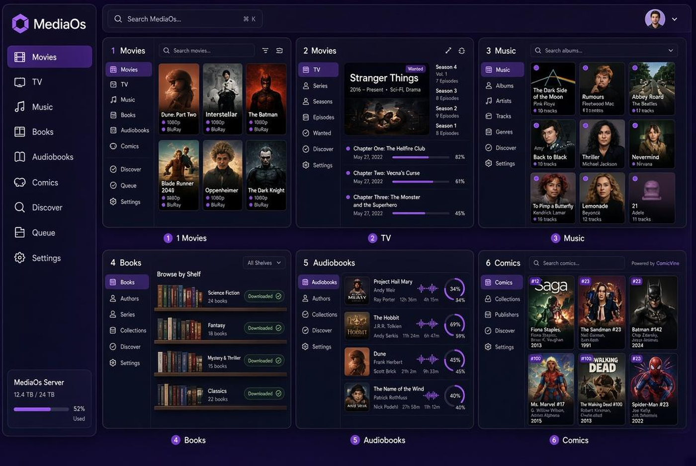
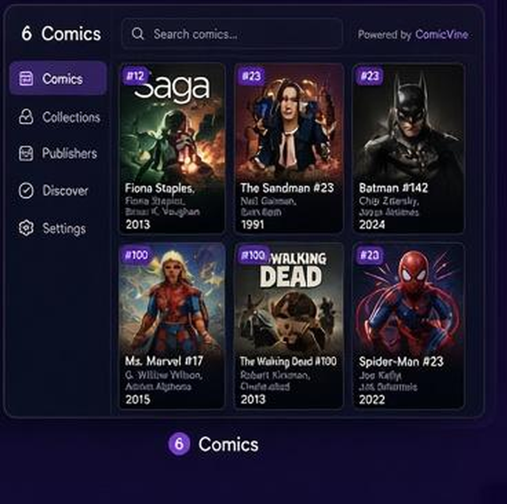
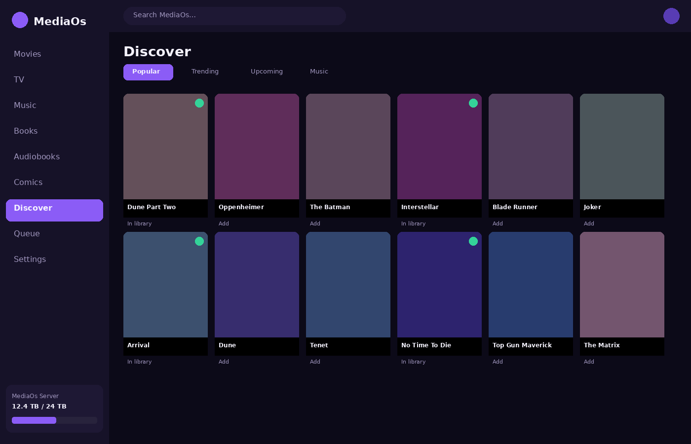
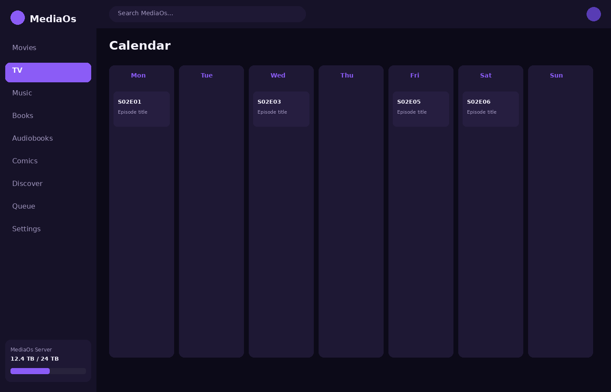
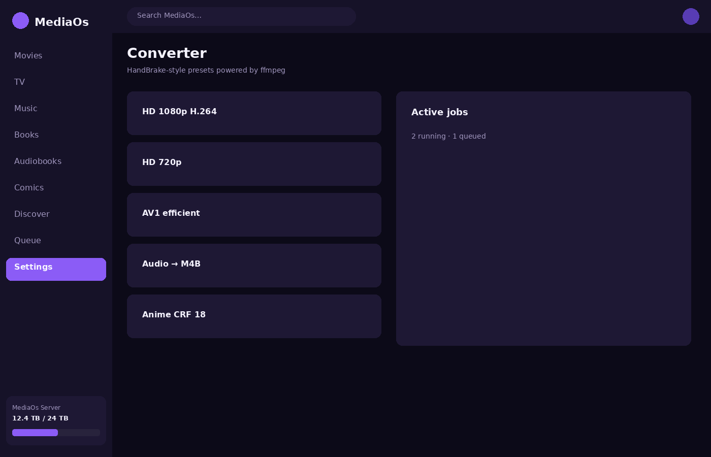
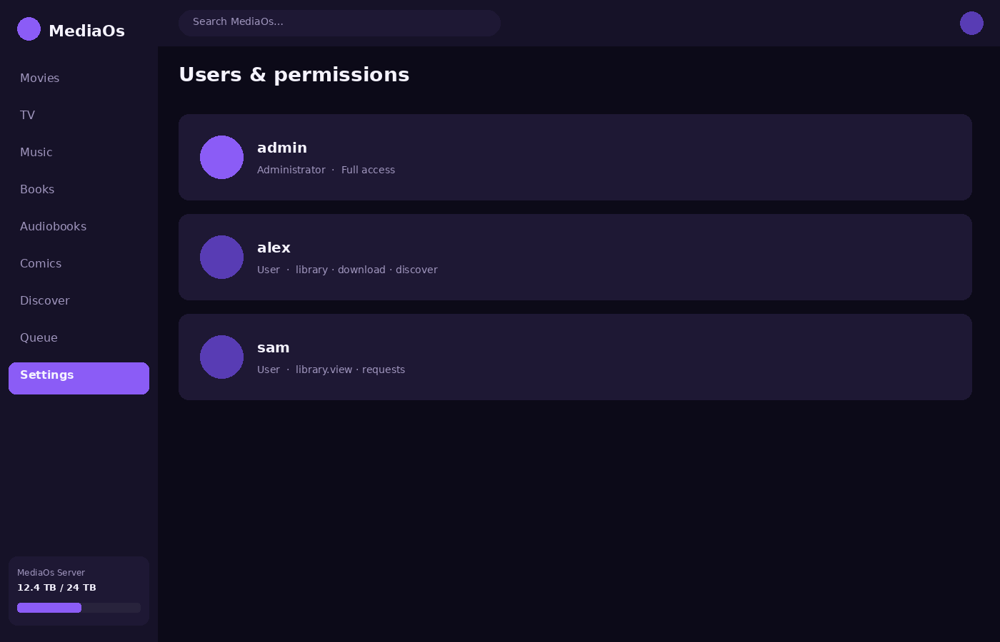
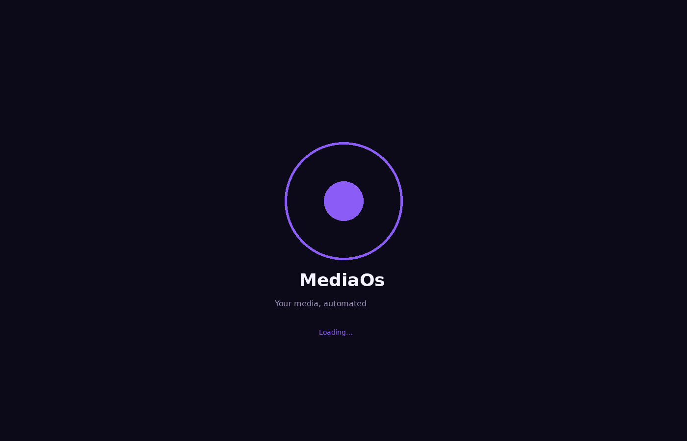

All-in-one media automation
Movies, TV, music, books, audiobooks, comics, requests, subtitles, Live TV, and more — one self-hosted app. Grab, rename, and organize into Jellyfin-friendly libraries.
Public testing
Docker Compose smoke path: pull or build → wizard → add one title → check /api/health. Report issues with redacted logs.
Features
Movies & TV
Search, grab, season packs, continuing/ended status, Jellyfin-style naming.
Music, books, comics
MusicBrainz, Open Library, ComicVine/MangaDex pipelines with organize.
Discover & requests
Popular/trending/upcoming lists with library badges; built-in request flow.
Indexers
Built-in public sources, optional Cardigann YAML, optional Prowlarr/Jackett Torznab.
Subtitles & debrid
OpenSubtitles/SubDL by default; Real-Debrid and other debrid unlock paths.
Ops
Converter presets, users/permissions, VPN health via Gluetun kill-switch, ARR-compat API.
Screenshots












Install
Docker Compose (recommended)
docker pull ghcr.io/newguy467/mediaos:latest
docker compose -f docker-compose.standalone.yml up -d
# UI: http://localhost:8787Build from source
git clone https://github.com/newguy467/mediaos.git
cd mediaos
cp .env.example .env
docker compose -f docker-compose.standalone.yml up -d --buildThe image builds the React UI and API together. You do not need Node on the host.
Configuration
| Key | When you need it |
|---|---|
TMDB_API_KEY | Movies / Discover |
TVDB_API_KEY | TV metadata |
| Download client password | Actual grabs |
PROWLARR_API_KEY / Jackett | Optional external Torznab |
OPENSUBTITLES_API_KEY | Subtitles |
REAL_DEBRID_TOKEN | Debrid unlock |
AUTH_* | Lock down public ports |
Full list: .env.example in the repository.
GHCR
docker pull ghcr.io/newguy467/mediaos:latest
docker pull ghcr.io/newguy467/mediaos:3.4.0Images publish from GitHub Actions on main and version tags. Compare running version via GET /api/health.
Scope & honesty
- Cardigann support is a subset of Jackett (selectors/login), not a full replacement.
- Private trackers: prefer Prowlarr/Jackett Torznab endpoints.
- VPN belongs on the download client (Gluetun example provided); MediaOs can health-check and kill-switch grabs.
- HTML subtitle sites are optional and fragile; OpenSubtitles is the solid default.
API
Interactive docs at /docs after install. Health: GET /api/health.